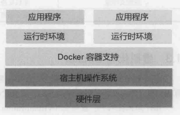

docker
docker三大核心:
- 镜像 -镜像不可写
- 容器 -容器基于镜像生成(可写)
- 仓库 -仓库存储镜像(类似于Git的管理机制)

docker的安装
wget -qO- https://get.docker.com/ | sh |
安装完后,将docker账户添加到用户组(非root)以便执行,然后登出再登录
否则会报no permission
sudo groupadd docker |
#启动docker |
#测试docker |
常用命令
# 搜索镜像 |
那些折腾
第一坑
不要强制删除一个存在容器依赖的镜像
即 -f ,因为会产生各种莫名其妙的问题
先删除容器,如果容器在运行，需要先停止#查看所有容器
docker ps -a
docker rm 容器id
创建镜像
基于已有容器docker commit -a "test" -m "add a new file" 容器id test(新镜像名字)
注意是容器id，不是镜像id
加tag
docker tag test:latest test/test:latest |
加了tag后，有两个同id的images
这时删除镜像报错Error response from daemon: conflict: unable to delete c30eab908457 (must be forced) - image is referenced in multiple repositories
删除时需要指定名字，而不是id
运行报错standard_init_linux.go:178: exec user process caused “exec format error”
查到原因是docker不支持32位ubuntu…
乖乖重装系统去
使用dockerfile创建镜像
FROM ubuntu |